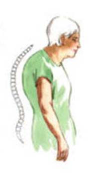
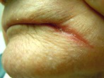

Al je antwoorden worden gewist en je begint opnieuw. Weet je het zeker?
Jouw resultaten
Arts en Patiënt 5 · 2e Toetsmoment 2016‑2017
—
/ 30
0
Goed
0
Fout
0
Niet beantwoord
Vraag 1
Noem drie voorbeelden van intrinsieke valrisicofactoren en drie voorbeelden van extrinsieke valrisicofactoren. Geef bij elke factor aan of het intrinsiek of extrinsiek is.
Modelantwoord
0,5 punt als er een goed item in de juiste categorie genoemd is.
Intrinsiek: visusklachten, gehoor, medicatie, osteoporose, sarcopenie, tragere reflexen, verminderde stabalans, stuggere gewrichten, afwijkingen stand tenen etc.
Extrinsiek: gladde of oneven oppervlakken, slechte verlichting, kleedjes, snoeren, opstaan uit lage stoel, risicovol gedrag, verhuizing etc.
Vraag 2
Casus 1
Mevrouw Van der Toren, is 82 jaar en nieuw in uw huisartspraktijk. Ze is recent verhuisd naar Buitenveldert omdat haar dochter daar woont. Uit de gegevens van de vorige huisarts blijkt dat zij last heeft van hartfalen en lang geleden een myocard infarct had. Zij gebruikt nog een lage dosis prednison, 1 dd 5 mg, sinds zij in 2015 polymyalgia reumatica (PMR) had.
De huisarts had haar in 2016 verwezen naar de internist-ouderengeneeskunde omdat ze steeds minder actief was, vergeetachtig werd en gewicht verloor, mogelijk omdat ze vergat te eten. Daar werd de diagnose beginnende dementie gesteld, meest waarschijnlijk van vasculaire origine. Ze kon zich nog wel zelfstandig thuis redden, maar haar dochter had inmiddels wel tafeltje dekje geregeld en er is thuiszorg ingeschakeld om te zorgen dat ze haar medicijnen inneemt en om bij de ADL te helpen.
De voorgeschiedenis in aanmerking nemende, ontbreken er medicijnen. Bisfosfonaten zijn niet geïndiceerd omdat de dosering prednison niet hoog genoeg is. Een statine ontbreekt, maar ook andere medicijnen. Welke? Noem ten minste drie verschillende medicijngroepen.
Modelantwoord
1 punt per medicijngroep. Als alleen de medicijnnaam er staat 0,5 punt per medicijnnaam (mits deze namen wel uit verschillende groepen komen; dus enalapril en lisinopril slechts 0,5 punt waard, enalapril en metoprolol 0,5 + 0,5 = 1 punt waard).
Volgens de richtlijn wordt na een myocardinfarct altijd gestart met diuretica in combinatie met ACE-remmers, angiotensine-II-receptorblokkers (ARB), bètablokkers en/of aldosteronantagonisten.
- Plaàtjesremmer (acetylsalicylzuur)
- Vitamine D
Vraag 3
Een statine ontbreekt. Geef de twee belangrijkste argumenten om bij deze patiënte GEEN statine voor te schrijven.
Modelantwoord
- In grote statine trials is nooit directe preventie van verdere cognitieve achteruitgang aangetoond (1 punt)
- Hoogstwaarschijnlijk is de time-until-benefit te kort (1 punt)
- Kans op bijwerkingen als spierpijn (1 punt)
Vraag 4
Vervolg casus 1
De huisarts heeft de medicatie van mevrouw Van der Toren aangevuld. Na drie weken wordt de huisarts door de dochter opgebeld omdat haar moeder is gevallen. Ook lijkt het alsof zij in de nacht in de war is. Ze is in de avond vaak geagiteerd. Als de thuiszorg haar ’s avonds naar bed heeft gebracht, lijkt het of zij er zelf weer uit komt, want ’s morgens treffen ze haar vaak in de stoel aan en heeft ze lopen rommelen in huis. In de ochtend is ze dan wel weer redelijk rustig en toont ze normaal gedrag.
De huisarts denkt aan een delier. Bij mevrouw Van der Toren kan onder andere een infectie een mogelijke oorzaak zijn. Wat zijn de andere meest waarschijnlijke oorzaken van het delier? Noem er drie.
Modelantwoord
MAX 3 antwoorden en dus 3 punten. Oorzaak delier:
- verergering hartfalen (1 punt)
- vasculair accident (1 punt)
- recidief myocard infarct (1 punt)
- diabetes mellitus bij corticosteroïdgebruik (1 punt)
Vraag 5
Vervolg casus 1
Bij nader onderzoek blijkt mevrouw Van der Toren een ernstige pyelonefritis te hebben, met een gevaarlijk lage bloeddruk. Zij wordt opgenomen in het ziekenhuis vanwege de grote kans op een levensgevaarlijke sepsis. Daar blijkt zij steeds haar infuus met antibiotica uit haar arm te trekken. De zaalarts besluit om bij mevrouw polsbandjes aan te leggen, zodat ze haar infuus er niet uit kan trekken.
Welke wet is hier van toepassing? Voldoet in deze casus de vrijheidsbeperkende maatregel aan de wettelijke eisen? Beargumenteer.
Modelantwoord
De WGBO (1 punt). Dat zou ook zo zijn als de setting wel een bopz-aanmerking heeft en mevrouw gedwongen is opgenomen; maar hier in het ziekenhuis geldt deze wet niet en is het handelingskader de WGBO.
De WGBO kent een aantal voorwaarden voor vrijheidsbeperking. De vrijheidsbeperking wordt tijdelijk ingezet vanuit de somatiek. Het moet gaan om het voorkomen van ernstig nadeel. Aangezien hier een grote kans bestaat op een levensgevaarlijke sepsis — zonder infuus is de kans op een dodelijke afloop zeer groot — wordt via intraveneuze antibiotica ernstig nadeel voorkomen.
Voorwaarden:
- mevrouw moet wilsonbekwaam ter zake zijn (1 punt)
- het moet gaan om ernstig nadeel dat je kunt voorkomen door een ingrijpende verrichting (1 punt)
- eventueel toestemming van de vertegenwoordiger (als genoemd wordt dat niet duidelijk is dat hieraan voldaan is, dan 1 punt, anders een half punt)
Vraag 6
Casus 2
Een 79-jarige vrouw komt met haar 88-jarige man op de huisartsenpost omdat hij zich sinds gisteren vreemd gedraagt. Hij is erg onrustig, soms zelfs agressief, en zegt dingen die niet kloppen. Ook eet hij een stuk minder. Twee dagen geleden was er nog niets aan de hand. Hij heeft een verblijfskatheter vanwege benigne prostaathypertrofie en COPD.
De AIOS huisartsgeneeskunde onderzoekt de man. Zij ziet een matig georiënteerde, onrustige man met een bloeddruk van 105/70 mm Hg, pols van 105/min regulair equaal, een ademhalingsfrequentie van 21/min, en een temperatuur van 35,7 graden Celsius. Bij het onderzoek van hart, longen, abdomen en extremiteiten worden geen duidelijke afwijkingen gevonden. Bij het urine-onderzoek is de nitriettest positief.
De AIOS stelt dat op basis van het bovenstaande onderzoek is bevestigd dat de verwardheid wordt veroorzaakt door een urineweginfectie. Haar opleider vindt dit een voorbarige conclusie. Waarom mag op basis van huidige gegevens nog niet gesteld worden dat er sprake is van een urineweginfectie?
Modelantwoord
Elk streepje is 2 punten waard, maar het maximum is 2 punten.
- Er kan ook sprake zijn van asymptomatische bacteriurie bij patiënten met een verblijfskatheter.
Oftewel:
- de positieve nitriettest hoeft niet met de huidige verwardheid geassocieerd te zijn.
Vraag 7
Vervolg casus 2
Op advies van de huisarts doet de AIOS een aanvullende CRP-test: deze toont een CRP van 110 mg/L (normaal: < 10 mg/L).
De AIOS bespreekt het resultaat met haar opleider. Zij is van mening dat bovenstaande uitslag nu wél duidelijk aantoont dat er sprake is van verwardheid naar aanleiding van een urineweginfectie. Haar opleider is het nu ten dele niet met haar eens. Welke andere veelvoorkomende oorzaak van verwardheid staat nog steeds heel hoog in de differentiaaldiagnose? Geef twee argumenten hiervoor.
Modelantwoord
Pneumonie (1 punt).
Argumenten:
- hoeft niet perse afwijkingen bij auscultatie te geven (1 punt)
- veelvoorkomende oorzaak van delier (op basis van infectie) bij ouderen (1 punt)
- COPD is een risicofactor (1 punt)
- (0,5 punt) versnelde ademhalingsfrequentie — minder punten waard omdat dit een zwak argument is; de normale ademhalingsfrequentie van deze COPD-patiënt is onbekend.
Vraag 8
De AIOS huisartsgeneeskunde stelt voor om de patiënt toch pragmatisch thuis te behandelen voor een urineweginfectie. Zij wil een antibioticum starten. Welk antibioticum is onder deze omstandigheden de eerste keuze?
Modelantwoord
Ciprofloxacine (middel 1 punt).
Vraag 9
De huisarts legt de AIOS uit dat dit een voorbeeld is van een atypische ziektepresentatie, zoals deze regelmatig bij ouderen wordt gezien. Welke twee gegevens uit de presentatie van deze casus zijn die ‘atypisch’?
Modelantwoord
1. Presentatie met verwardheid in plaats van specifieke lokaliserende klachten (1 punt)
2. Presentatie met ondertemperatuur in plaats van koorts (1 punt)
Vraag 10
Casus 3
Mevrouw Maas is een 78-jarige weduwe. Zij heeft diverse inzakkingfracturen van de wervelkolom waardoor haar houding voorovergebogen is. Het beperkt haar mobiliteit, zij komt met moeite uit een stoel of bed. Zij loopt met behulp van een rollator nog wel op straat. De wijkverpleging helpt haar elke ochtend met wassen en aankleden. Vanwege de rugklachten gebruikt zij paracetamol 3 dd 1000 mg en diclofenac 3 dd 50 mg. Omeprazol 1 dd 20 mg gebruikt zij ter preventie van peptische ulcera. Daarnaast slikt zij alendroninezuur 1 dd 10 mg, Calci chew D3 1000/800®. Omdat zij snel angstig is, gebruikt zij oxazepam 10 mg z.n.
De wijkverpleging heeft de huisarts om een visite gevraagd omdat mevrouw steeds minder loopt, nadat ze twee maanden geleden gevallen is. Toen is er geen duidelijke oorzaak voor het vallen gevonden. Ze had hematomen maar geen fracturen. Sindsdien is zij minder initiatiefrijk en lijkt bang om te vallen. Daarnaast heeft ze weer veel last van pijn in haar rug.
Welke risicofactoren voor vallen zijn bij mevrouw Maas aanwezig, naast vrouwelijk geslacht, pijn en een eerdere val? Noem er drie.
Modelantwoord
Maximum 3 punten.
- Polyfarmacie (0,5 punt voor polyfarmacie als ook oxazepam genoemd is; patiënte heeft wel 5 medicijnen, maar een psycho-actief medicijn is daar onderdeel van)
- Afhankelijk in ADL-activiteiten (1 punt)
- Oxazepam/benzodiazepine (1 punt)
- Mobiliteitsstoornissen (1 punt)
Vraag 11
Vervolg casus 3
Bij het lichamelijk onderzoek valt op dat dit de houding van mevrouw Maas is (zie afbeelding).
a. Hoe wordt deze afwijking van de thoracale wervelkolom genoemd? b. Hoe past deze afwijking bij haar medische voorgeschiedenis?

Modelantwoord
a. Kyfose (1 punt).
b. Osteoporose geeft vaak fracturen in de onderste thoracale en lumbale vertebrae met een kyfose tot gevolg (1 punt).
Vraag 12
Vervolg casus 3
De huisarts doet uitgebreid lichamelijk onderzoek, inclusief het neurologisch onderzoek en balanstesten. Zijn conclusie is dat zij door haar kromme rug balansproblemen heeft en dat het daarom goed is dat zij met de rollator loopt. Dit was echter al duidelijk. De huisarts wil ook nog inzicht krijgen in mogelijke factoren die meetellen bij haar angst om te vallen die niet bij het lichamelijk onderzoek duidelijk worden.
Welke drie behandelopties zijn relevant om mevrouw Maas weer meer te laten lopen?
Modelantwoord
Elke optie is 1 punt waard.
- Oxazepam stoppen
- Fysiotherapie
- Pijnmedicatie verbeteren
Vraag 13
Casus 4
Mevr. Ketelman, een vrouw van 68 jaar, met in haar voorgeschiedenis diabetes mellitus type 2, hypercholesterolemie, hypertensie, migraine en recidiverende depressieve episoden komt bij u voor de jaarlijkse controle en het polyfarmaciegesprek. In dit gesprek wordt alle medicatie door u bekeken en eventueel aangepast. Mevrouw ervaart op dit moment geen problemen bij het innemen van de medicatie. Sinds een aantal maanden heeft ze in toenemende mate last van duizeligheid bij het opstaan uit de stoel en lijkt meer onvast ter been. Ze laat tevens weten vorige week minder symptomen gevoeld te hebben ten tijde van haar hypoglykemie. In het verleden voelde ze hypoglykemie altijd goed aan. Bij lichamelijk onderzoek ziet u een fitte vrouw met orthostatische hypotensie (zittend 142-94 mm Hg, staand 108-80 mm Hg).
Welke interactie tussen twee geneesmiddelen uit de medicatielijst van Mevr. Ketelman kan de orthostatische hypotensie verklaren? Noem de twee geneesmiddelen en geef de verklaring.
Modelantwoord
3 punten; 1 punt voor de twee geneesmiddelen, 2 punten voor de verklaring.
Amitriptyline en antihypertensiva (lisinopril, hydrochloorthiazide en propranolol). (amitriptyline en 1 ander antihypertensivum bij naam genoemd is genoeg)
Een veelvoorkomende anti-noradrenerge bijwerking van amitriptyline is (orthostatische) hypotensie. Deze symptomen kunnen worden versterkt door het gebruik van andere antihypertensiva.
Vraag 14
Benoem en beargumenteer welke interactie (twee geneesmiddelen) uit de medicatielijst van Mevr. Ketelman het meest waarschijnlijk heeft gezorgd voor de maskering van de symptomen van de hypoglykemie.
Modelantwoord
3 punten; 1 punt voor de interactie, 2 punten voor de verklaring.
Gliclazide en propranolol.
Een veelvoorkomende bijwerking van gliclazide is een hypoglykemie. Het sympathische systeem zal hierop reageren en onder andere klachten geven van hartkloppingen, verwardheid en zweten. Door het inhiberen van het sympathische systeem door een niet-selectieve bètablokker (propranolol) kunnen deze klachten worden gemaskeerd.
Vraag 15
Casus 5
Een 71-jarige man moet starten met nierfunctievervangende therapie. Voor niertransplantatie is hij afgekeurd. Hij wil nu peritoneaaldialyse gaan doen.
Wat zijn absolute contra-indicaties voor niertransplantatie en waarom? Noem er drie.
Modelantwoord
1 punt per goed antwoord.
- Levensverwachting < 2 jaar: een oudere patiënt heeft pas na 6-12 maanden overlevingsvoordeel van een niertransplantatie.
- Actieve systemische infectie: kan leiden tot overlijden bij start van immuunsuppressie.
- Niet curatief behandelde maligniteit: is progressief onder immuunsuppressie.
Vraag 16
Beschrijf de manier waarop peritoneaaldialyse werkt als nierfunctievervangende therapie. Doe dit door de twee belangrijkste processen te noemen en het bijbehorende effect.
Welke drie functies van de nier worden met deze techniek NIET vervangen?
Modelantwoord
- Activatie van vitamine D door het enzym alfa-hydroxylase
- Productie van epo voor het aanmaken van erytrocyten
- Productie van renine
- Klaring van middelgrote en grote moleculen (afvalstoffen), zoals beta-2-microglobuline
Vraag 18
Casus 6
Een 58-jarige man wordt via Schiphol gepresenteerd op de eerste hulp. Hij heeft in het vliegtuig vanuit Mallorca pijn op de borst gekregen en voelt zich benauwd. Hij voelde zich de afgelopen maanden ‘niet goed’. Hij heeft weinig eetlust en braakt af en toe. Ook heeft hij oedeem gekregen. Hij plast maar weinig, de laatste keer is zeker 12 uur geleden en toen was het maar een klein beetje. Op het ECG worden geen ischemische veranderingen gezien, wel hoge T-toppen. Bij auscultatie van het hart valt pericardwrijven op. Hij heeft pitting oedeem tot aan de knieën.
Waar duiden de hoge T-toppen op?
Modelantwoord
Hyperkaliëmie (2 punten).
Vraag 19
Waar duidt het pericardwrijven op? Wees zo specifiek mogelijk.
Beschrijf de vier meest waarschijnlijke oorzaken van de benauwdheid in deze casus.
Modelantwoord
Elk streepje 2 punten.
- Overvulling bij ernstige nierinsufficiëntie met oligurie/anurie
- Metabole acidose
- Renale anemie (epo-tekort)
- Longembolie (na vliegreis)
Vraag 21
Als de spoedeisende hulparts maar met één specialist zou mogen overleggen voordat het bloedonderzoek bekend is, welke specialist is dan het meest relevant? En waarom?
Modelantwoord
De nefroloog (1 punt). Er is een grote kans dat deze patiënt acuut zal moeten starten met dialyse (1 punt).
Vraag 22
Casus 7
De 83-jarige mevrouw Kuit, een weduwe, bevindt zich in het eindstadium van COPD. Tevens heeft zij hypertensie en gegeneraliseerde artrose. Het laatste half jaar is zij al vier keer opgenomen geweest voor een exacerbatie COPD. Zij krijgt optimale medicatie. Twee weken geleden kwam ze thuis van haar laatste opname. Toen was 2 dd 10 mg morfine aan haar medicatie toegevoegd. Twee dagen geleden kreeg zij opnieuw een exacerbatie. Direct is toen met antibiotica en prednison gestart en 24-uurs-thuiszorg geregeld, maar mevrouw Kuit knapt niet op. Zij is tot niets meer in staat. De huisarts treft bij de visite een zeer kortademige, uitgebluste mevrouw Kuit en een zoon die vindt dat het zo niet meer gaat. Mevrouw Kuit wil echter per se niet naar het ziekenhuis, zij wil thuis sterven. Ze heeft naast de benauwdheid veel last van hoesten en een droge mond.
a. Welke medicamenteuze behandeling is nu geïndiceerd om het hoesten te verminderen? b. Op welke wijze zorgt deze behandeling voor verlichting?
Modelantwoord
één antwoord is genoeg. Medicijn 1 punt, toelichting ook 1 punt.
- Orale morfine ophogen met 50% of een morfinepomp (morfine is 1 punt waard; het ophogen met 50%, de pomp of de toelichting is ook 1 punt waard)
OF
- Verneveling met lokale anesthetica: lidocaïne 2% tot 4 dd 5 ml (verneveling is 1 punt; meer juiste gegevens zoals lidocaïne of verdoving is ook 1 punt waard). Zie oncoline-richtlijn COPD.
Vraag 23
Welke drie niet-medicamenteuze adviezen zijn bij mevrouw Kuit gepast ten aanzien van haar droge mond?
Modelantwoord
1 punt per streepje.
- goede gebitsverzorging
- kleine slokjes water/regelmatig drinken aanbieden of helpen met drinken
- mondspoeling of mondspray
- zuigen op ijssnippers of ijsblokjes
- kunstspeeksel (Saliva Orthana)
- Biotene (mondspoeling) of Oral Balance gel of spray (minimaal 3 dd)
- snoepjes (suikervrij), kauwgom, ananasblokjes (lost slijm op)
Vraag 24
Vervolg casus 7
De huisarts schat in dat mevrouw Kuit nog maximaal twee weken zal leven. Toch zegt de zoon van mevrouw Kuit dat het zo niet verder kan. De huisarts gaat na of aan alle voorwaarden voor palliatieve sedatie voldaan is.
Welke twee andere voorwaarden voor palliatieve sedatie moet de huisarts nog onderzoeken?
Modelantwoord
1 punt per streepje.
- Is er sprake van een refractair symptoom?
- Is de sedatie in overeenstemming met de wens van de patiënt?
Vraag 25
Vervolg casus 7
Twee dagen later wordt overgegaan tot palliatieve sedatie, aan alle voorwaarden was voldaan. Mevrouw Kuit krijgt een subcutaan infuus.
Wat is het medicijn van eerste keus dat mevrouw Kuit subcutaan krijgt toegediend om haar palliatief te sederen?
Modelantwoord
Midazolam (dormicum) 1 punt OF benzodiazepine 0,5 punt.
Vraag 26
Mevrouw Kuit ligt twee dagen gesedeerd in bed als ze begint te reutelen. Wat is voor mevrouw Kuit de meest aangewezen niet-medicamenteuze behandeling?
Modelantwoord
Houdingsverandering.
Vraag 27
Na vier dagen overlijdt mevrouw Kuit. De huisarts reflecteert over zijn handelen tijdens het laatste half jaar van het leven van mevrouw Kuit. Achteraf gezien ontbrak het aan anticiperend zorgbeleid (advance care planning). Welke vraag had de huisarts zich moeten stellen om te constateren dat het juiste moment voor Advance Care Planning aangebroken was?
Modelantwoord
‘Zou het mij verbazen als deze patiënt volgend jaar niet meer leeft?’ (de surprise question).
Vraag 28
Casus 8
Mevrouw Van Dongen, 83 jaar, heeft de ziekte van Alzheimer in een vergevorderd stadium. Het grootste deel van de dag is zij bedlegerig. Zij heeft daar nu slikstoornissen bij waardoor zij te weinig eten en drinken binnenkrijgt. Zij is het laatste half jaar erg afgevallen. Ze woog 60 kg en nu nog maar 52 kg. Adviezen van de logopedist en diëtist hebben dit probleem onvoldoende kunnen oplossen.
Voldoet mevrouw Van Dongen aan de criteria van ondervoeding? Waarom wel/niet?
Modelantwoord
Ja, zij voldoet aan de criteria (0,5 punt). Mevrouw is 8 kg afgevallen in zes maanden, zij woog 60 kg. Dus het gewichtsverlies is meer dan 10% in 6 maanden (0,5 punt).
NB: er is enige internationale discrepantie: in hfst 68 van het studieboek is significant weight loss gedefinieerd als 4-5% gewichtsverlies over 6-12 maanden. Volgens het Voedingscentrum: onbedoeld gewichtsverlies 5-10% (3-6 kg) in het afgelopen half jaar, of 6 kg (10%) of meer in het afgelopen half jaar.
Vraag 29
De familie van de patiënt vraagt de arts nu om sondevoeding te starten, zodat zij voldoende voeding en vocht binnenkrijgt. De arts vindt dit geen goed beleid. Motiveer het afzien van sondevoeding met drie redenen.
Modelantwoord
- omdat dit bij gevorderde dementie geen levensverlenging geeft
- patiënten met sondevoeding hebben vaak last van bijwerkingen: misselijkheid, braken, aspireren, diarree, problemen ter plaatse van de steekopening van de PEG-sonde
- dit geeft geen verbetering van de kwaliteit van leven
Vraag 30
De mond van mevrouw Van Dongen ziet er uit als op de afbeelding. Wat is de medische terminologie voor deze aandoening en welke oorzaak staat hoog in de differentiaaldiagnose?

Modelantwoord
1 punt voor: perlèche OF cheilitis angularis (of angulaire cheilitis).
1 punt voor de oorzaak: candida-infectie OF smetten OF kwijlen OF gebit.